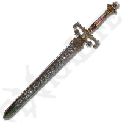
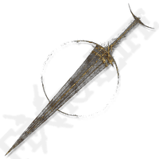
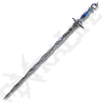
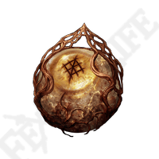
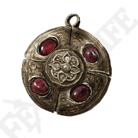

Items
Discover the items available in Elden Ring DLC.

Sword of Night and Flame
This legendary sword deals both physical and magical damage. Its special skill unleashes a powerful burst of flames.

Golden Order Greatsword
A holy sword with powerful light-based attacks. Excellent for fighting against dark creatures.

Carian Regal Scepter
A staff imbued with the power of the Carian royals, capable of casting powerful sorceries.

Radagon's Scarseal
An amulet that increases various stats at the cost of increased damage taken. A double-edged sword for those seeking power.

Crimson Amber Medallion
A medallion that raises maximum health, essential for enduring tougher battles.